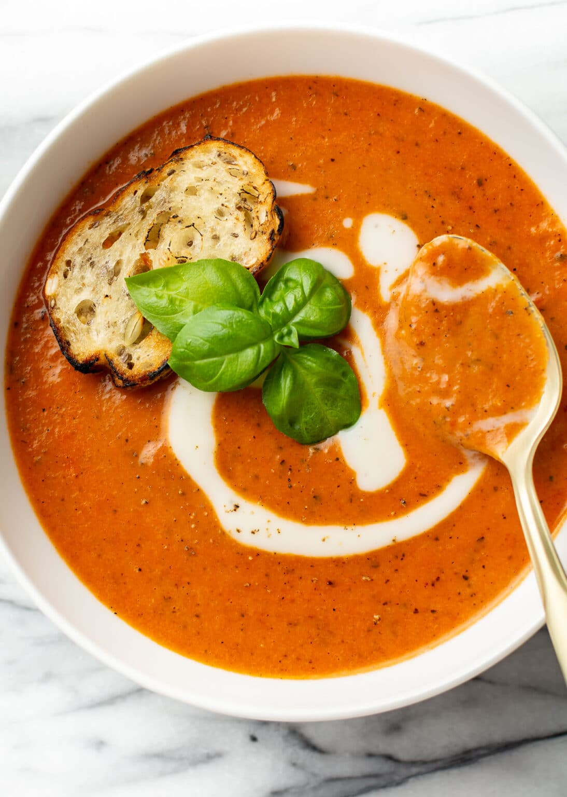

Tomato Soup

Description
Flavorful and creamy tomato soup.
Ingredients
- 2 tablespoons unsalted butter
- 1 onion, coarsely chopped
- 2 (14-ounce) cans whole peeled tomatoes
- Coarse salt and freshly ground pepper
- 1 1/2 cups bone broth
- ½ cup heavy cream
Steps
- Melt butter in a medium stockpot over medium heat. Cook onion, stirring constantly, until soft and translucent, about 3 minutes.
- Add tomatoes, their juices, and stock. Season with salt and pepper and bring to a boil, then reduce heat and simmer 10 minutes.
- Working in batches, transfer tomato mixture to a blender, food processor, or food mill. Puree tomato mixture.
- Return soup to a clean pot and set over low heat.
- Whisk in cream, if desired; season with salt and pepper. Serve immediately.